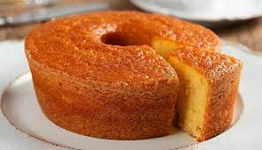

A receita de bolo de fubá é uma das mais tradicionais do nosso país! Ela é simples, gostosa e perfeita para a aquelas tardes aconchegantes e momentos regados a um saboroso café. Com poucos ingredientes e passos descomplicados, essa receita oferece um sabor tradicional que aquece o coração. Para preparar este bolo, basta bater todos os ingredientes no liquidificador até obter uma massa homogênea. Em seguida, despeje-a em uma forma previamente untada e enfarinhada. Asse em forno preaquecido por cerca de 40 minutos até que o bolo esteja dourado e firme ao toque. O resultado é um bolo macio, com uma textura delicada e um aroma inconfundível de fubá. Cada fatia é um convite a umsabor autêntico, perfeito para ser apreciado acompanhado de um café fresco ou chá, de preferência em uma reunião com amigos e familiares. Desfrute desta receita simples, porém repleta de tradição, oferecendo um pedacinho da doçura caseira em cada mordida.
